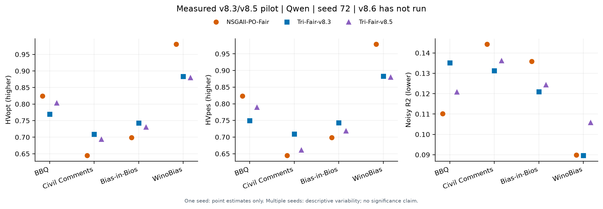
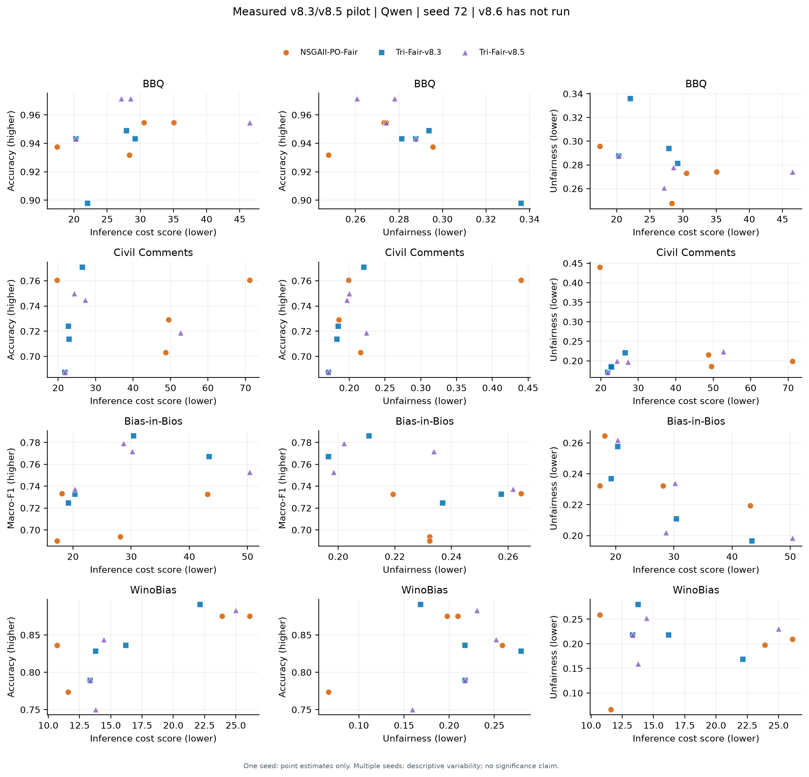

Experimental code consolidation, 19 October 2026. The paper-facing label is Tri-Fair. The implementation identity remains Tri-Fair-v8.6 in every result and checkpoint.
No v8.6 GPU results exist yet. Existing v8.3/v8.5 observations have not been renamed, pooled as a new method, or altered. Historical modules remain importable as reusable implementation components and for reproduction, but the active configuration and new pilot contain only one proposed Tri-Fair method.
| Component | Implemented behavior |
|---|---|
| Attributed reflection from v8.3 | Objective-mode scheduling, measured error attribution, bounded JSON proposals, quality label catalogs, short gold demonstrations, duplicate memory and progress guards. |
| Stable editing from v8.5 | Search-block sensitivity for mutation parents; instruction edits preserve demos, demo edits preserve instructions; paired WinoBias evidence and gold demonstrations; genuine instruction/demo compression. |
| Shared foundation | One pooled three-objective archive, paired uncertainty racing, reference-direction/HV truncation, strict downstream token controller, atomic checkpoints and frozen search-audit reserve. |
| New adaptive portfolio | Cold-start coverage of three proposal strategies followed by UCB selection. Every fifth strategy decision explicitly explores the least-used strategy. Strategy state is checkpointed. |
| New complementary merge | Choose parents using their measured success/error complementarity on shared cached search examples. A bounded request merges useful decision rules; the resulting prompt is evaluated through the same racing and budget path. |
| New measured strategy credit | Re-score pre/post-step fronts on exactly the same already observed search blocks. Positive HV gain per actual downstream token is clipped to [0,1] for scheduling. No free model calls, held-out feedback, or changed reported objectives. |
The latest seed-72 pilot showed complementary strengths: v8.3 led overall indicators on Bios and Civil Comments; v8.5 produced a stronger BBQ quality-first candidate but did not lead all front indicators. Selecting a fixed winner from those four validation datasets would not establish general superiority. V8.6 instead adapts proposal effort using its own search evidence inside a single budget. It does not run both optimizers to completion and choose whichever validation result is favorable.
GEPA motivates combining complementary lessons from measured attempts. HRPO explicitly contrasts positive and negative prompt histories to reduce forgetting. These are design inspirations, not claims that their complete algorithms or guarantees have been reproduced. MO-CAPO's racing and frontier reporting remain relevant foundations. A source/access ledger is in references.json; the earlier detailed review remains in research/v85.
For one proposal strategy o and one executed search step: B_common = search blocks cached for all before/after archive candidates If coverage or fairness support is insufficient: no gain credit gain = HV(A_after; B_common) - HV(A_before; B_common) reward = clip(max(0, gain) * 1,000,000 / max(1, actual tokens spent), 0, 1) UCB(o) = mean_reward(o) + 0.20 * sqrt(log(total_trials + 1) / trials(o))
This is a cost-sensitive search heuristic. It is not an unbiased bandit estimator, a convergence proof, or a held-out indicator. Search-block sensitivity is not a confidence interval. Late partial steps and zero/negative gains are recorded rather than replaced with optimistic measurements. Initial population construction uses compact and schema-complete alternatives within the existing four-candidate limit.
| Setting | Value shared across proposed method and control |
|---|---|
| Model / seed / datasets | Qwen / 72 / BBQ, Civil Comments, Bios, WinoBias |
| Default methods | Tri-Fair-v8.6 and unchanged NSGAII-PO-Fair |
| Cap per method | 2,000,000 downstream tokens: 1,400,000 search plus 600,000 reserved search audit |
| Population / demonstrations / audit shortlist | 4 / at most 2 / at most 4 |
| Downstream decoding | Shared structured labels, greedy, 16 output-token maximum |
| Validation | Unique union of audited-final and real historical prompts evaluated once. Additional tokens logged separately; no feedback to search. |
| Concurrency | Two dataset tasks by default; one GPU per task; two methods sequentially inside a task |
Eight optimization runs have a total ceiling of 16M downstream tokens, plus separately measured meta generation and held-out evaluation. Fairness support and budget admission gates are unchanged. The reserve is not forcibly spent when audits are fully cached. A fair comparison is between methods re-run under these settings; old v8.3/v8.5 values remain historical references.
MODEL=qwen-3-30b SEED=72 PILOT_BUDGET=2000000 MAX_CONCURRENT=2 \ DRY_RUN=1 bash jobs/submit_pilot_v86.sh MODEL=qwen-3-30b SEED=72 PILOT_BUDGET=2000000 MAX_CONCURRENT=2 \ DRY_RUN=0 bash jobs/submit_pilot_v86.sh
The helper submits training and a dependent validation array, printing job IDs and a unique batch directory. Both arrays use dataset indices 0=BBQ, 1=Civil Comments, 2=Bios, 3=WinoBias. Logs use pilot86 and pilot86_eval prefixes. No jobs were submitted from this workspace.
Mistral and GPT-OSS remain supported model aliases. Each requires a successful backend smoke on suitable hardware before its pilot. The GPT-OSS helper restricts scheduling to the existing H200/B200 pool. Source consolidation does not itself validate a new backend.
The supplied paper's Figure 2 uses actual-budget nR2 trajectories, Figure 3 uses empirical attainment, and Figure 4 describes prompt composition. For three objectives, the new plotting module generates:
Palette: Tri-Fair teal #007F73, NSGA-II vermilion #D55E00, SPEA2 magenta #CC79A7, NSGA-III sky blue #56B4E9, Random Search slate #7B8794, Enhanced NSGA-II ochre #B38F00. Shapes also distinguish methods for grayscale printing. Past v8.3/v8.5 examples retain separate blue/purple labels.
Outputs are vector SVG, high-resolution PNG, CSV values and figure_protocol.json. One-seed plots have no fabricated variability band. Final-only archives do not produce a fake trajectory. The validation job generates its figures automatically; these can be regenerated on CPU without model loading:
python -m tri_fair.reporting.research_figures \ --evaluations PATH_TO_EVAL_PARQUET \ --split validation --budget 2000000 --output-dir figures/v86
The examples below use only the uploaded completed v8.3/v8.5 seed-72 pilot, with the original method labels. There are no v8.6 points or uncertainty bands.


JSON configurations in configs/sensitivity isolate attributed-only, stable-only, no-merge, zero stability penalty, and alternate UCB exploration strengths within the same v8.6 implementation. These are planned comparisons, not measured improvements. Use the existing train --optimizer-overrides option with each file; do not apply a Tri-Fair-specific override to a baseline.
Inspect new search and validation outcomes first, including strategy trial counts, shared-block credit, actual tokens and fairness support. Then repeat matched seeds and compare remaining unchanged baselines. Freeze the chosen method/settings before test. Repeated design changes based on the same validation examples consume validation independence; final untouched test evaluation is essential. No strict dominance or significance is guaranteed by consolidation.
See algorithm.tex for the implemented algorithm and validation.json for the actual CPU checks. Historical results and comparison implementations are preserved.